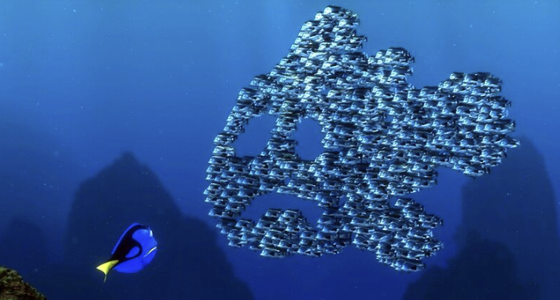
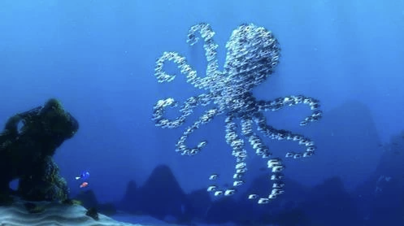

Given a text input, we will generate a particle simulator where randomly positioned particles will transform into a 3D cloud point structure representing the input text through swarm intelligence. For example, if the text input was “apple”, the original particles will map to a new position to spell out “apple” in a 3D format.
Particle simulation is important as it is used very often when rendering images in the real world and the entertainment industry. It is a vital technique that is used in VR/AR, gaming, generating celestial bodies for space exploration, and also animation. In fact, the inspiration behind this project came from a scene in Finding Nemo where a school of fish clustered together to form different images.
|

|

|
However, creating a particle simulator is challenging because it involves controlling the behavior of a large collection of objects that are mutually dependent and highly interactive with one another. This leads to a problem that is innately computationally intensive.
To solve this issue, we plan to utilize a modified boids model to control the movement of individual particles while also taking into account the position and movement of neighboring particles. We will try different algorithmic approaches to force convergence to a point cloud generated by the Point-E 3D point cloud ML model to simulate random particles into a recognizable structural image based on a text input. We will also likely need to implement an upsampling/downsampling algorithm for the point cloud to support different numbers of boids as well as different granularities of the generated point cloud.
We plan to utilize multiple online resources and websites when implementing our particle simulator. Here is a comprehensive list of the models/algorithms we plan to use and their corresponding references.
To program our project, we plan to use our personal laptops and use GitHub to collaborate and share our code with each other.